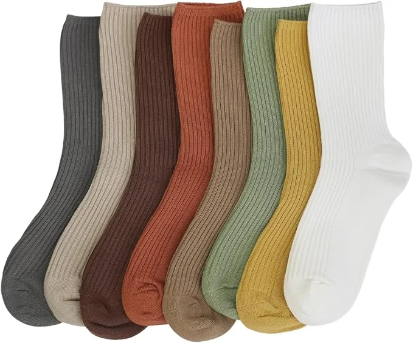
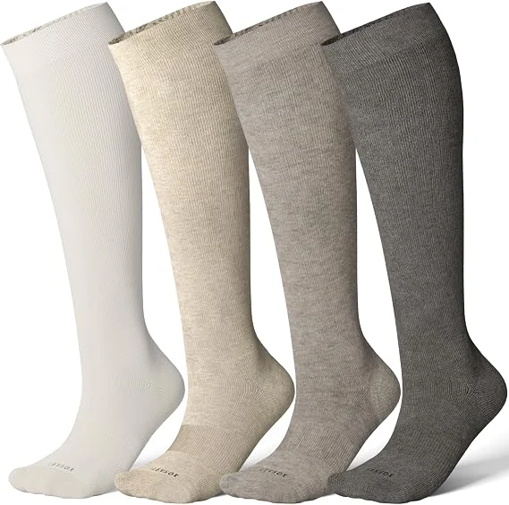
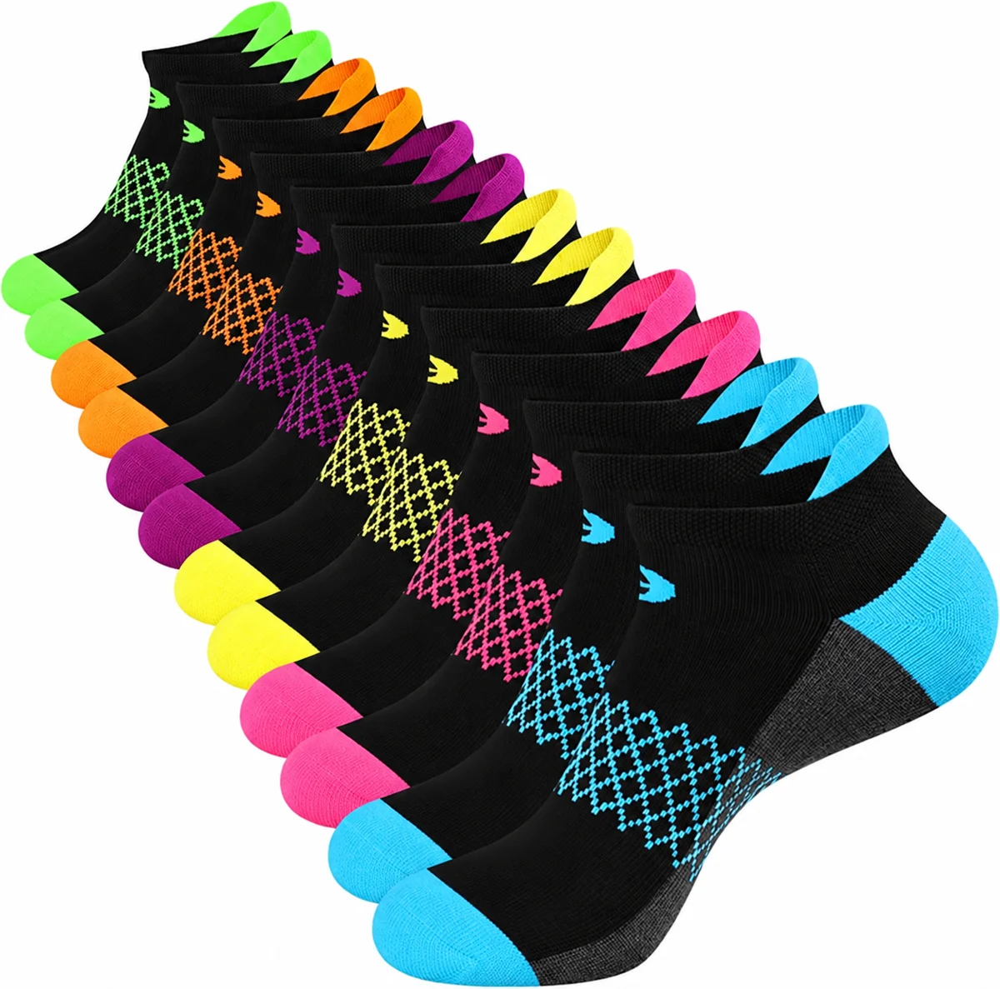
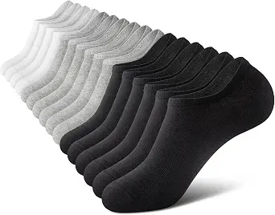
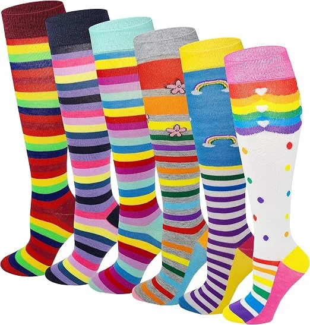
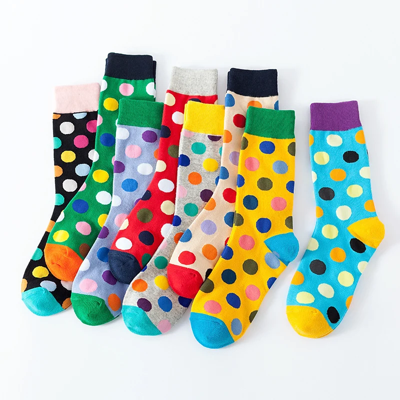

Cotton blends
A familiar everyday feel for crew socks and retail basics.
From the first yarn to the final package, build a sock collection that feels like your brand. Start with an idea. We help bring the details together.
Start Your Project ↗
A collection that is unmistakably yours.
Tell us how your socks will be worn. We can discuss a blend that balances softness, stretch, durability and your target price.
A familiar everyday feel for crew socks and retail basics.
A smooth, soft feel for lifestyle and premium everyday collections.
A warm option for seasonal collections and outdoor-inspired designs.
Discuss polyester, nylon and stretch yarns for your intended activity.
Low profiles, classic crews or statement knee-highs. Choose the height that suits your wearer and design.

A low profile inside the shoe.

Short and simple for everyday wear.
A versatile canvas for your brand.
More room for patterns and artwork.

A longer silhouette with bold impact.
Finished dimensions are agreed during sampling; style names alone do not define the fit.
Create quiet essentials or a collection full of character. Send your color references and we will review yarn choices with your artwork.

Work the design into the knit. A good starting point for clear logos, lettering and repeated motifs.
Best discussed for: bold shapes and knit patternsExplore printed artwork for colorful or detailed designs. Material and printing method need to suit each other.
Best discussed for: illustrations and color detailAdd a raised stitched detail. We review logo size and placement to help keep the sock comfortable.
Best discussed for: small brand accentsCuff · Leg · Ankle · Instep · Sole
We check artwork scale, stitch clarity and placement during sample review.
Share the age group, shoe sizes and sales market for your collection. We will plan the size assortment before sampling.
Match the presentation to your retail shelf, corporate gift or event. Packaging details are quoted alongside your socks.
A clean wrap with brand, size and care information.
Prepare your collection for retail display.
A practical option for distribution and larger orders.
Create a considered presentation for single or multi-pair sets.
Ask about barcodes, size stickers and care labels. Final specifications and artwork require approval.
Sock type, artwork, quantity, sizes and delivery needs.
Agree materials, colors, logo method and packaging.
Check the physical feel, fit and design. Sample preparation: 3–7 days.
Bulk production takes about 30 days after approval. Shipping is planned separately.
Our minimum order starts at 500 pairs. We confirm how quantities can be split across designs and sizes when reviewing your brief.
Yes. Share what you have, plus your planned quantity and intended use. We can work through the remaining specifications with you.
A vector logo in AI, EPS, SVG or PDF is useful when available. Clear PNG or JPG references can help explain the direction; we will confirm whether additional artwork is needed.
Screens and physical yarns can look different. Send your color references and review the actual sample to approve the final appearance.
Yes. Sample costs, packaging costs and shipping depend on the project. We confirm these with your order details.
Yes. Discuss your logo, size range, care labeling and packaging with us so these details can be included in the sample and quotation.
Send your design, quantity and target use to start your custom sock project.
Request a Custom Quote ↗Browse Sock Styles →